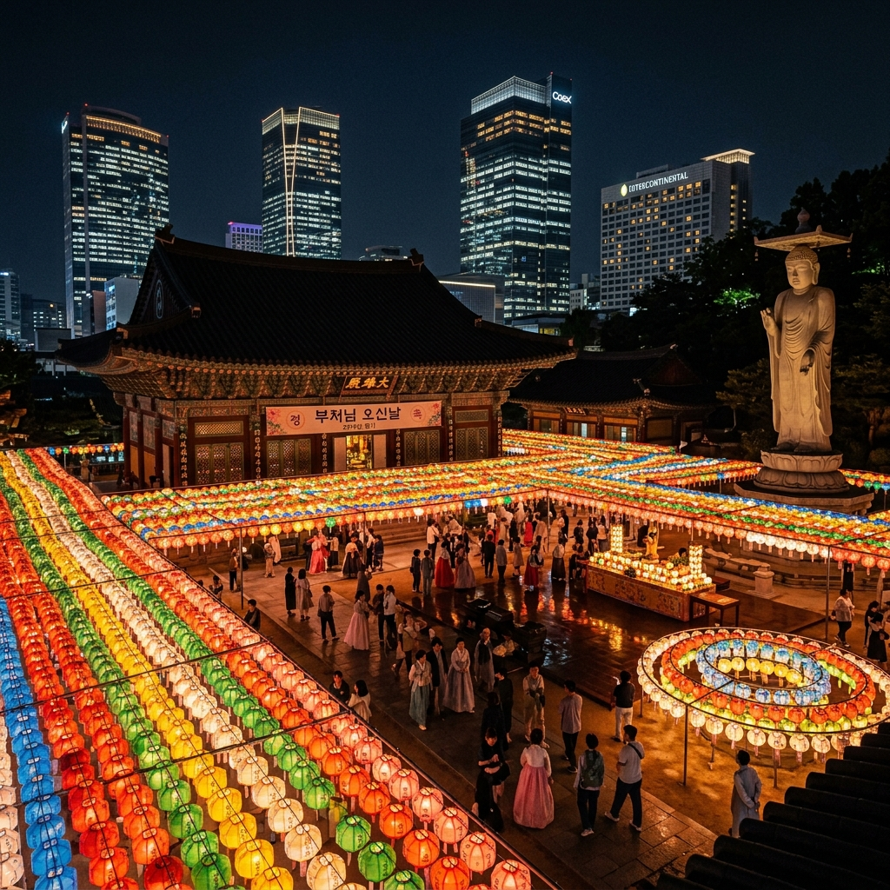
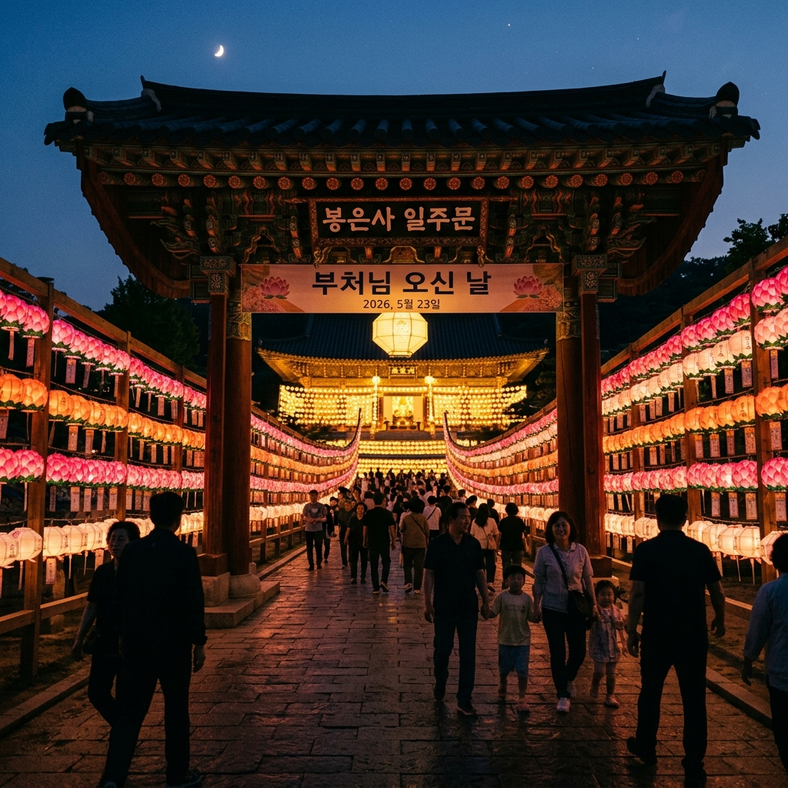
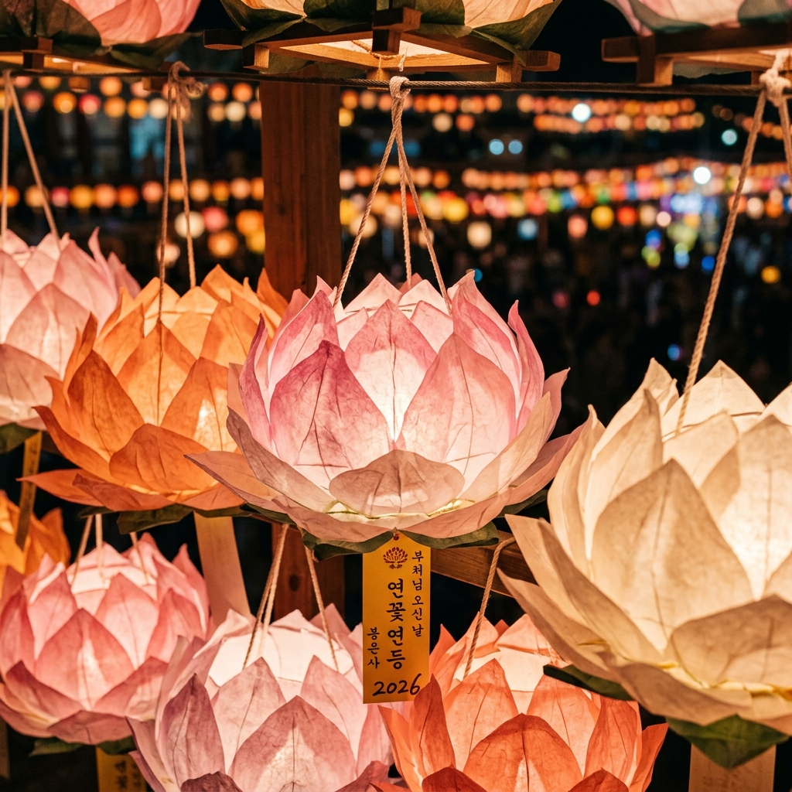

서울 봉은사 부처님오신날 2026 — 강남 천년 고찰 연등 야경과 코엑스 도심 투어 완벽 가이드
2026년 부처님오신날은 5월 24일(일요일)입니다. 서울 강남 한복판, 코엑스 바로 옆에 자리한 봉은사(奉恩寺)는 1,200년 역사를 가진 천년 고찰로, 매년 부처님오신날이면 경내 전체를 수천 개의 연등으로 장식하여 서울에서 가장 아름다운 연등 야경 명소로 변합니다. 신라 시대 창건된 고찰의 고즈넉함과 현대 도시 서울의 화려함이 교차하는 봉은사 부처님오신날 완벽 가이드를 시작합니다.
01. 봉은사 소개 — 강남에 존재하는 1,200년 천년 고찰
봉은사(奉恩寺)는 서울특별시 강남구 봉은사로 531에 위치한 대한불교 조계종 제2교구 소속 사찰입니다. 서기 794년 신라 원성왕 10년에 연회 국사가 창건한 것으로 전해지며, 처음에는 '견성사(見性寺)'라는 이름으로 불렸습니다. 이후 조선 시대인 1498년 현재의 이름 '봉은사'로 개칭되어 오늘에 이르고 있습니다.
봉은사는 단순한 사찰이 아닙니다. 성종의 능인 선릉을 수호하는 원찰(願刹)로 지정되어 왕실의 비호 아래 크게 번성했고, 판선종도회소(判禪宗都會所)로서 조선 불교의 최고 의사결정 기관 역할을 하기도 했습니다. 이러한 역사적 무게감은 현재도 봉은사 경내 곳곳에 남아 있습니다.
현재 봉은사 경내에는 조선 시대 판전(板殿, 목판 보관 건물), 미륵대불(23m 높이의 실내 대불), 선불당, 북극보전 등 다양한 문화재와 건축물이 있습니다. 특히 판전에 보관된 화엄경 목판은 보물 제321호로 지정된 귀중한 문화유산입니다.
코엑스 남쪽 출구에서 도보 5분이면 도달할 수 있는 이 사찰은, 강남 도심의 번잡함을 뒤로하고 순식간에 고요한 산사 분위기로 전환시켜주는 서울 최고의 도심 속 힐링 공간입니다.

[봉은사 부처님오신날 연등 야경 전경] / AI 생성 이미지
02. 2026년 부처님오신날 — 날짜와 연등회 일정
2026년 부처님오신날(음력 4월 8일)은 5월 24일(일요일)입니다. 법정 공휴일로, 많은 분들이 주말을 이용해 방문하는 날이기도 합니다.
연등회(燃燈會, Yeondeunghoe)는 단순한 축제가 아닌 유네스코 인류무형문화유산(2020년 등재)으로, 불교 최대 명절인 부처님오신날을 기념하는 전통 문화 행사입니다. 전국 각지의 사찰과 거리에서 연등을 밝히는 이 행사는 통일신라 시대까지 거슬러 올라가는 1,000년 이상의 역사를 갖고 있습니다.
| 행사 | 일정 | 장소 |
|---|
| 봉축 점등식 (연등 점화) | 부처님오신날 전 2주간 | 봉은사 경내 전체 |
| 연등행렬 (서울 중심) | 2026년 5월 23일(토) | 동대문 → 조계사 (종로) |
| 봉은사 법요식 | 2026년 5월 24일(일) 오전 10시 | 봉은사 대웅전 앞 광장 |
| 어울림 마당 (문화 공연) | 5월 23~24일 | 봉은사 진여원 앞 |
| 연등 제작 체험 | 5월 10일~24일 주말 | 봉은사 선불당 앞 |
| 경내 특별 개방 | 5월 24일 야간 (오후 9시까지) | 봉은사 전 구역 |
봉은사는 평소 오전 4시~오후 9시까지 개방되며 입장은 무료입니다. 부처님오신날 당일에는 연등 점등 시간인 오후 6시 이후가 되면 환상적인 연등 야경이 펼쳐집니다.
03. 봉은사 연등 야경 명당 3포인트
봉은사에서 가장 아름다운 연등 사진을 건질 수 있는 위치를 구체적으로 안내합니다.
명당 1 — 일주문(一柱門) 진입로: 봉은사 정문인 일주문에서 대웅전 방향으로 이어지는 진입로가 연등 터널을 이룹니다. 양쪽으로 줄지어 매달린 연등 사이로 원근감 있는 구도를 잡으면 SNS에서 높은 반응을 얻을 수 있는 인생샷이 완성됩니다. 일주문 정면에서 정 중앙으로 촬영하는 것이 포인트입니다.
명당 2 — 미륵대불 앞 광장: 봉은사 내 23m 높이의 미륵대불(彌勒大佛) 앞 광장에서는 연등을 배경으로 거대한 불상 전체를 프레임에 넣을 수 있습니다. 야간에 연등과 대불 양쪽에 조명이 들어오면, 보는 것만으로도 경이로운 분위기가 연출됩니다.
명당 3 — 판전 옆 은행나무 아래: 봉은사 경내 가장 안쪽에 위치한 판전 옆에는 수백 년 된 고목이 서 있습니다. 이 나무에 걸린 연등들과 고색창연한 판전 건물이 어우러진 구도는 봉은사에서 가장 '한국적'인 장면을 연출합니다.

[봉은사 일주문 연등 터널 — 야경 인생샷 명당] / AI 생성 이미지
04. 봉은사 기본 정보 — 교통 & 방문 팁
| 항목 | 내용 |
|---|
| 주소 | 서울특별시 강남구 봉은사로 531 |
| 입장료 | 무료 (연중) |
| 개방 시간 | 오전 4시~오후 9시 (부처님오신날 당일 오후 9시까지 특별 개방) |
| 지하철 | 9호선 봉은사역 1번 출구 도보 5분 / 2호선 삼성역 6번 출구 도보 8분 |
| 버스 | 강남대로 방향 다수 노선, '봉은사' 정류장 하차 |
| 주차 | 봉은사 내부 주차장 유료 운영 (부처님오신날 당일 대중교통 강력 권장) |
| 주변 명소 | 코엑스몰, 한국무역협회 SETEC, 선릉·정릉(세계유산) |
부처님오신날 당일에는 강남구 일원 교통이 매우 혼잡합니다. 자가용보다 지하철을 강력 권장합니다. 9호선 봉은사역 1번 출구는 봉은사 정문과 가장 가까우며, 급행열차를 이용하면 고속터미널에서 단 10분 만에 도달 가능합니다.
05. 코엑스 연계 도심 투어 — 봉은사 전후로 즐기는 강남 문화 탐방
봉은사 방문 전후로 바로 옆 코엑스몰과 인근 명소를 함께 즐기면 알찬 하루 코스가 완성됩니다.
부처님오신날 봉은사 + 강남 당일 코스 (약 7시간)
🚇 지하철 이동 → ⛩️ 봉은사 낮 방문 & 법요식 참관 (오전 10시~12시) → 🛍️ 코엑스몰 점심 & 별마당도서관 관람 (12시~14시) → 📚 선릉·정릉(세계유산) 산책 (14시~15시 30분) → ☕ 가로수길 카페 (15시 30분~17시) → 🏮 봉은사 연등 야경 감상 (18시~20시)
코엑스 별마당도서관: 코엑스몰 중앙에 위치한 13m 높이의 '별마당도서관'은 국내에서 가장 아름다운 도서관 중 하나로 꼽힙니다. 책과 예술이 공존하는 이 공간에서 봉은사 방문 전후 잠시 쉬어가는 것도 좋습니다.
선릉·정릉: 봉은사 바로 옆에 위치한 유네스코 세계유산 조선 왕릉 구역입니다. 성종과 중종의 능이 있는 이곳은 도심 한복판에서 울창한 숲길을 걸으며 조선 왕실의 역사를 느낄 수 있는 곳입니다. 입장료는 성인 1,000원으로 매우 저렴합니다.
06. 봉은사 문화 체험 — 연등 제작 & 다도
봉은사는 단순 관람을 넘어 다양한 문화 체험 프로그램을 제공합니다.
연등 제작 체험은 부처님오신날 이전 주말에 봉은사 선불당 앞에서 진행됩니다. 약 2만원 내외의 재료비로 나만의 연등을 직접 만들고 경내에 걸 수 있습니다. 아이들과 함께라면 잊을 수 없는 체험이 될 것입니다. 사전 예약 없이 현장 접수도 가능하지만, 연등 절정기 주말에는 조기 마감되는 경우가 있으므로 봉은사 공식 홈페이지 또는 전화(02-3218-4800)로 사전 확인을 권장합니다.
다도 체험은 봉은사 불교문화교육원에서 정기적으로 진행됩니다. 스님이 직접 차를 우려내는 전통 다도의 고요함을 경험하고 싶다면, 봉은사 불교문화교육원 체험 프로그램에 신청하세요. 부처님오신날 즈음에는 특별 다도 체험 행사가 열리기도 합니다.
07. 봉은사 사진 촬영 예절 & 주의사항
사찰은 종교 시설이므로 방문 시 지켜야 할 기본 예절이 있습니다.
⚠️ 봉은사 방문 예절
• 복장: 노출이 심한 옷은 자제하세요. 경내 진입 시 모자를 벗는 것이 기본 예의입니다.
• 소음: 법당 내부 및 예불 진행 중에는 큰 소리로 이야기하거나 전화 통화를 삼가세요.
• 사진 촬영: 법당 내부의 불상 촬영은 금지된 곳이 있습니다. '촬영 금지' 표시를 반드시 확인하세요. 외부 연등과 경내 풍경 촬영은 자유롭게 가능합니다.
• 음식물: 경내에서의 취식은 지정된 장소 외에서는 삼가세요.
08. 봉은사 연등 야경 촬영 핵심 기법
수천 개의 연등이 밝혀진 밤의 봉은사에서 최고의 사진을 남기는 방법입니다.
야간 촬영 기본 세팅: ISO 800~1600, 조리개 f/2.0~f/2.8, 셔터 스피드 1/60s 이상으로 설정하면 연등의 따뜻한 빛을 담으면서도 배경의 디테일을 유지할 수 있습니다. 스마트폰의 경우 '야간 모드(Night mode)'를 활성화하세요.
연등 보케(Bokeh) 활용: 멀리 있는 연등들이 자연스럽게 흐려지도록 조리개를 최대 개방하면, 피사체(가까운 연등 또는 인물)에 집중되면서 배경의 연등들이 크고 둥근 보케로 표현됩니다. 이 기법은 봉은사 연등 사진의 '시그니처 룩'으로, 인스타그램에서 가장 많이 보이는 구도입니다.
삼각대 필수: 야간 장노출 촬영 시 삼각대는 필수입니다. 단 경내가 붐빌 경우 삼각대가 타인의 동선을 방해할 수 있으므로, 가급적 구석 자리를 선점해 촬영하세요.

[봉은사 연꽃 연등 접사 — 따뜻한 빛의 질감] / AI 생성 이미지
09. 봉은사 주변 인기 맛집 & 카페
봉은사 방문 전후 강남구 일원에서 즐길 수 있는 식사와 카페를 안내합니다.
봉은사로 인근 사찰 음식 식당: 봉은사 주변에는 연꽃차와 사찰 음식을 메뉴로 하는 소규모 식당이 있습니다. 고기 없이 자연의 맛으로만 구성된 사찰 정식은 번잡한 강남에서 의외의 힐링을 제공합니다. 가격은 1인당 1만 5천원~2만원 수준입니다.
코엑스몰 푸드홀: 코엑스몰 지하 1층에는 한식, 일식, 양식 등 다양한 레스토랑이 모여 있습니다. 봉은사 방문 후 편리하게 접근할 수 있어 많은 방문객들이 이용합니다.
청담동 고급 카페: 봉은사에서 도보 15분 거리의 청담동에는 국내 최고급 카페 브랜드들이 밀집해 있습니다. 봉은사의 정적인 분위기와 극적인 대조를 이루는 트렌디한 공간에서 하루의 마무리를 즐겨보세요.
10. 봉은사 연등 야경 — 서울 다른 사찰과 비교
서울에서 부처님오신날 연등 야경을 즐길 수 있는 주요 사찰을 비교합니다.
| 사찰 | 특징 | 접근성 |
|---|
| 봉은사 (강남) | 도심 속 역사, 코엑스 연계, 규모 크고 세련됨 | 9호선 봉은사역, 최상급 |
| 조계사 (종로) | 대한불교 본사, 연등행렬 중심지, 인파 가장 많음 | 지하철 종각역, 최상급 |
| 진관사 (은평) | 산사 분위기, 청정한 자연 속 연등, 인파 적음 | 지하철 후 버스 필요 |
| 삼막사 (관악) | 산속 깊은 사찰, 야경이 아름답지만 접근 어려움 | 자가용 필요 |
봉은사는 강남구라는 탁월한 입지 덕분에 연등 야경의 품격과 접근성 모두를 갖춘 최고의 선택지입니다. 처음으로 서울에서 부처님오신날을 보내는 분이라면 봉은사를 가장 먼저 추천합니다.
#봉은사
#부처님오신날2026
#연등야경
#강남사찰
#서울연등
#봉은사연등
#5월24일
#코엑스여행
#서울야경
#불교문화체험